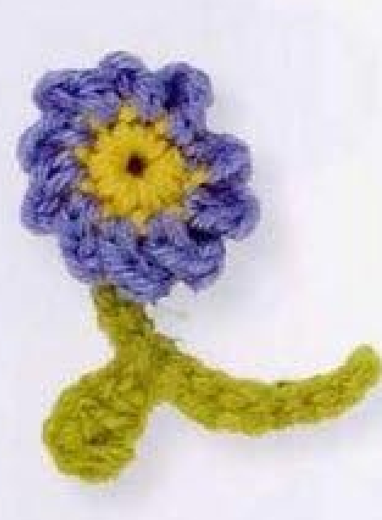
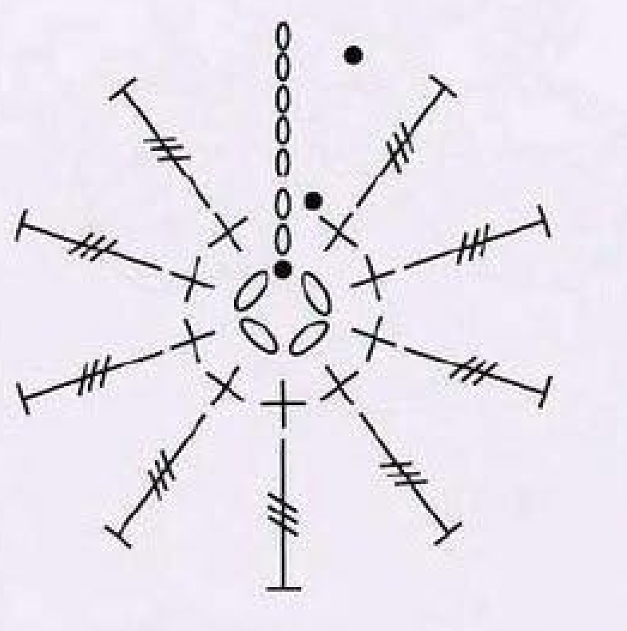
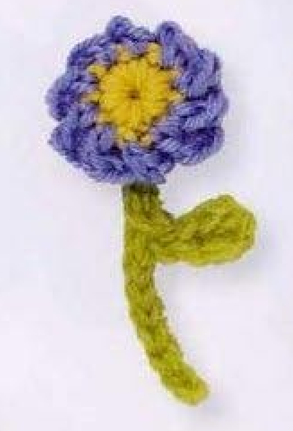
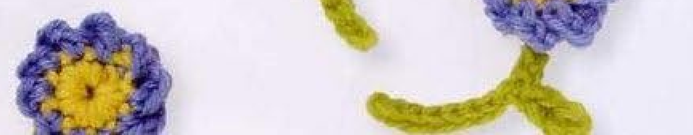
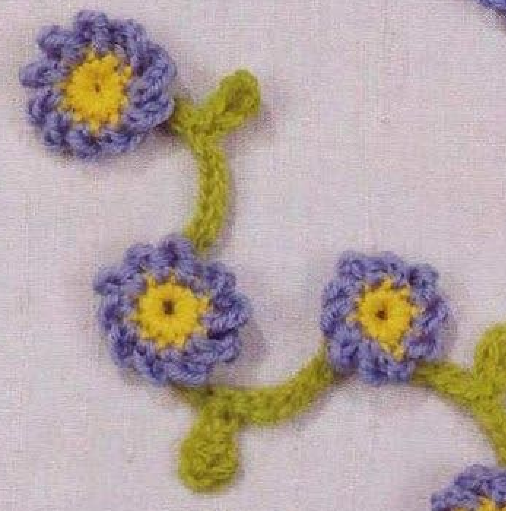

A crochet Forget-me-not combines a yellow ring center, a blue ruffled flower edge, and a separately worked green stem with one small leaf. This guide follows pattern 49 in Lesley Stanfield’s 100 Flowers to Knit & Crochet. The complete flower and stem recipes are retained, with UK stitch names translated into US terms and source photographs and chart placed alongside the explanations.

Key Takeaways
- Use 4-ply wool in yellow A, blue B, and green C.
- The flower starts with a four-chain joined ring.
- The yellow round has ten counted positions: opening chains plus nine single crochet stitches.
- The blue round uses an opening chain-five and nine US double treble stitches.
- Make the stem and leaf in green, press those parts only, then attach them behind the flower.
CROCHET FORGET-ME-NOT FLOWER PATTERN
Project: One small wool flower with a separate stem-and-leaf piece sewn to the back. The source counts, color changes, and finishing direction are preserved here in US terminology. Unspecified measurements and materials are marked clearly; added handling advice is practical guidance.
| Skill level | Not specified in the entry. Practical guidance: familiarity with tall stitches, small round joins, and sewing is useful. |
|---|---|
| Base size | One flower with a stem and one leaf. Finished dimensions are not specified. |
| Yarn | 4-ply wool: yellow A, blue B, green C. |
| Quantity | Not specified. Keep matching small amounts available for the three components. |
| Hook and gauge | Not specified. Select a hook suited to your wool and evaluate a sample. |
| Notions | Scissors and a blunt yarn needle; an optional marker helps identify round starts. |
| US abbreviations | ch = chain; sl st = slip stitch; sc = single crochet; dc = double crochet; dtr = double treble crochet. UK dc = US sc; UK tr = US dc; UK trtr = US dtr. |
| Flower foundation | With yellow A, ch 4 and sl st into the first chain to form a ring. |
| Round 1 (RS) | Ch 2, work 9 sc into the ring, then using blue B sl st into the top chain of the starting ch 2. Count 10 positions including the opening chain group. |
| Round 2 | Continue with blue B. Ch 5, work 1 dtr into each of the next 9 sc, and sl st into the top chain of the starting ch 5. Fasten off. |
| Stem | With green C, ch 12. Skip 1 chain, then sl st into each of the next 7 foundation chains. Four foundation chains remain for the later return. |
| Leaf | Ch 5 for a branch. Skip 2 of those new leaf chains, work 1 dc into the next, 1 sc into the next, and sl st into the next. Then sl st into each of the 4 remaining stem-foundation chains. Fasten off. |
| Assembly | Press the stem and leaf only, using a method appropriate for the wool. Attach the green piece to the back of the flower. |
Understand the Flower and Separate Green Piece
The flower itself is worked in two rounds over a joined chain ring. The first round is yellow and relatively short; the second is blue and uses much taller stitches. The finished photographs show the blue edge rippling around the center. The written pattern does not make five separate petal units with individual repeats, so do not replace its tall-stitch round with an invented five-petal recipe.
The green stem and leaf are made separately from the flower. They begin with a twelve-chain stem foundation, pause after seven return slip stitches to make a five-chain leaf branch, then continue along the four remaining stem chains. That placement gives a leaf partway along the stem instead of adding a second green piece later.
The final source instruction is to press only the stem and leaf, then attach them behind the flower. Keeping the flower and green piece separate during construction helps preserve the ruffled blue edge. There is no extra blue border round or green calyx in this entry. Those additions would be personal adaptations rather than omitted steps.
Choose 4-Ply Wool and Prepare the Colors
Use yellow A, blue B, and green C in 4-ply wool. Choose yarns of similar thickness so the three parts look like a single motif. The source photographs show bright yellow centers with blue rims and green stems, but the entry does not give a brand, measured yarn allowance, exact hook size, or finished diameter.
Select a hook that allows the tall blue stitches to form comfortably. A yarn label can provide a starting point, but it is not a hook specification supplied by this pattern. Practice a double treble if it is unfamiliar and check that you can draw through the loop pairs without splitting the yarn. The short green stitches also need room to move without becoming rigid.
Prepare scissors and a blunt needle for securing ends and attaching the green piece. Have blue ready while completing the yellow round because the color changes at the join. Green is used later for the separate component. An optional marker can identify the top of the starting chains, especially in a very small flower where the join is easy to confuse with a neighboring stitch.
Material note: The source supplies 4-ply wool and three color roles. Gauge, hook size, quantity, and dimensions are not stated. Use a sample to choose practical settings for your own yarn.
Translate the UK Terms and Read the Chart

UK double crochet becomes US single crochet in this guide. UK treble becomes US double crochet for the leaf. UK triple treble becomes US double treble for the blue flower round. This last translation is particularly important: a US double treble starts with three yarn overs, while a US treble starts with two.
The chart shows a ring of short center stitches and a surrounding set of tall stitches. It also marks the starting chains and joining points. Read it as a continuous outer round, not as a diagram for separate sewn petals. The source photograph is the reference for the way that tall outer fabric ripples after completion.
The opening chains contribute to each round’s structure. In Round 1 the ch-two opening is counted alongside nine sc to give ten positions. In Round 2 the ch-five opening takes the place of the first tall outer position, followed by nine worked double treble stitches. Do not add an extra worked stitch at the join to reach a total that ignores the starting chains.
Step 1: Join the Yellow Foundation Ring
With yellow A, make four chains. Keep them untwisted and slip stitch into the first chain to form a ring. The first round is worked into the opening of that ring, not as one stitch into each individual foundation chain. Keep the beginning end clear while you insert the hook so it does not become an unintended strand in a stitch.
The small opening is part of the pictured ring center. A magic ring or a stuffed center would change the foundation and should be labeled as a substitution. For the source-based example, keep the joined four-chain ring. If it feels too tight to work into, review chain tension on a fresh start rather than adding extra chains automatically.
Step 2: Work the Yellow Center Round
With the right side facing, chain two and make nine US single crochet stitches into the ring. Move the stitches gently around the foundation if needed to create room. For each sc, insert the hook into the ring, draw up a loop, then yarn over and draw through both loops. Keep the stitches even and the center accessible.
Count the nine worked single crochets before joining. The opening chain group counts as the remaining position, making ten in the source total. If you worked ten sc as well as the opening chains, the center has an extra position and the blue round will no longer correspond to the written nine-stitch run.
Using blue B, slip stitch into the top chain of the starting chain two. This closes the yellow round and introduces blue for the next round. The top-chain join differs from the first-chain join used by some other flower patterns, so follow this entry rather than reusing a join location remembered from another motif.
Center checkpoint: Nine worked sc plus the starting chain group give ten positions. Close into the top chain using blue, ready for the tall outer round.
Step 3: Make the Blue Double Treble Round
Continue with blue B and chain five. Work one US double treble into each of the next nine single crochet stitches. Each tall stitch goes into the next stitch top; there are no repeated groups of several tall stitches in one base stitch in the written pattern. Keep the yellow center stable while forming the long blue stitches.
To make a US double treble, yarn over three times, insert the hook into the indicated single crochet, yarn over, and draw up a loop. Yarn over and draw through two loops four times to complete the stitch. Do not leave the last step unfinished as you would for a cluster. These are separate completed tall stitches around the center.
After the ninth worked double treble, slip stitch into the top chain of the starting chain five. Fasten off. The opening chain group and nine tall stitches form the outer round. Allow the blue fabric to settle naturally around the yellow ring rather than forcing it into five sharply separated petals or adding extra shaping stitches.
Compare the result with the source photographs after laying it down gently. A blue stitch can look folded simply because the flower has been held tightly during work. Release the motif and arrange the rim before deciding a stitch is incorrect. Check count and terminology first if the outer round looks substantially different in height or fullness.
Follow the Written Round, Then Compare the Shape
The outer round has nine worked tall stitches plus its starting chain group. The photographs show the resulting ruffled outline. A visible fold does not define a new stitch repeat, so keep the written count rather than inventing separate petals from the picture.
Step 4: Start the Green Stem
With green C, make twelve chains. Skip the chain nearest the hook and slip stitch into each of the next seven chains, working back along the foundation. Count the return stitches carefully. After skipping one and working seven, four original foundation chains remain. Leave those four unworked while you make the leaf branch.
A slip stitch is formed by drawing yarn through the indicated chain and directly through the loop already on the hook. Keep a light enough tension that the stem stays flexible. Working all eleven available chains before making the leaf would move the branch to a different position and would not follow the source sequence.
Step 5: Work the Leaf Branch and Finish the Stem
At the current point on the stem, chain five for the leaf. These are new branch chains, distinct from the four remaining stem-foundation chains. Skip two of the new leaf chains. Work one US double crochet into the next leaf chain, one US single crochet into the next, and a slip stitch into the final leaf chain.
The taller stitch followed by the shorter stitch and slip stitch gives the little leaf its taper. The leaf uses US dc and sc; do not confuse the leaf’s US double crochet with the much taller double treble used in the blue round. The two skipped leaf chains provide the starting height, not additional leaf stitches to fill afterward.
After returning along the leaf branch, slip stitch into each of the four remaining original stem chains. Fasten off. The completed green piece consists of a worked-back stem with a leaf branching at the pause point. There is no separate leaf to sew onto the stem, and no extra chain segment after those four final slip stitches.

Press the Green Piece and Attach It Behind the Flower
The source directs you to press the stem and leaf only. Follow the wool-care instructions and test a suitable method before applying heat or steam. No pressing temperature or duration is supplied. Arrange the green piece so the leaf is recognizable and the stem can lie comfortably behind the flower without twisting.
Attach the green piece to the back of the finished flower with small secure stitches. Keep the joining stitches around the stable center rather than pulling across the blue rim. Check the front as you work to make sure the yellow ring has not been cinched closed and the ruffled edge remains free. Secure the ends after testing the attachment gently.
Do not press the flower as though it were a flat leaf; the source explicitly limits pressing to the stem and leaf. Gentle finger arrangement of the blue rim lets you compare the finished shape without flattening its folds. If the green part is attached in an awkward direction, correct its placement before trimming the last sewing end.
Troubleshoot Counts and Component Placement
The blue edge is too short or too tall
Check the tall stitch translation. The source UK triple treble is US double treble, with three starting yarn overs and four pairwise draw-throughs. A US treble is shorter, while another taller stitch would change the edge again. Confirm nine worked tall stitches and the opening chain-five before altering materials.
The leaf is at the end of the stem
Recheck where you paused the stem return. The source works seven slip stitches after the skipped chain, leaving four foundation chains. The five-chain leaf branch is made at that point. Working all remaining stem chains first places the leaf elsewhere and changes the intended arrangement.
The center is crowded
Count nine worked sc plus the opening chain group. An extra single crochet creates an additional position. Also inspect weaving-in tension: a correctly counted center can become distorted if the ends are pulled tightly through it. Secure the tails without closing the visible ring opening or drawing the blue stitches into a knot.

Color Variations, Sizing, and Decorative Uses
Yellow, blue, and green are the source colors. A different blue shade can be tested while preserving the recipe. Other palettes, extra leaves, or a new border round are personal adaptations. The entry gives no graded sizes, so make and measure your own sample if the flower must fit a particular decorative position.
Suggested uses include a small applique on a fabric accessory, bag, or handmade panel. These are additional ideas rather than a separate project included in this pattern entry. Attach through stable center and stem points while leaving the blue rim free. Position several completed samples together before committing to a permanent arrangement.
Variation guidance: Keep the original two-round flower and the stem’s seven-stitch pause when comparing materials. Record any changed counts as an adaptation rather than a source instruction.

Forget-me-not at a Glance
- 4-ply wool in yellow, blue, and green.
- Four-chain ring with a yellow ten-position center.
- Blue chain-five start and nine US double treble stitches.
- Twelve-chain stem, leaf branch after seven return slip stitches, then four final stem stitches.
- Press stem and leaf only; attach the green piece to the flower’s back.
Conclusion
Forget-me-not brings together a compact yellow center, a tall blue outer round, and a separate branched green piece. Count the opening chains correctly, translate the tall stitch carefully, and preserve the pause that places the leaf along the stem. Use the complete pattern card as your working reference. Click the Pin to return to the recipe and source photographs when you are ready to make the applique.
Source and Tags
Source: Lesley Stanfield, 100 Flowers to Knit & Crochet, pattern 49 Forget-me-not. Instructions and chart are on printed page 71, PDF page 65 in the supplied scan; directory photographs are on printed page 33, PDF page 28. Source photographs show completed flowers, with some page-edge examples partly cropped in the scan. This guide retains the recipe in US terms and identifies added practical advice separately.
Forget-me-notCrochet FlowersBlue WoolStem and LeafDouble TrebleCrochet Applique